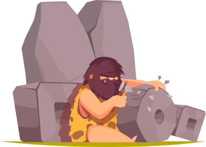

Naprave za računanje
Od davnina se čovjek domišljao kako olakšati računanje, pa su mnogo prije suvremenih računala nastale različite naprave i strojevi koji su pomagali pri računanju.

Prva pomagala za zbrajanje, oduzimanje i kasnije složenije računske operacije